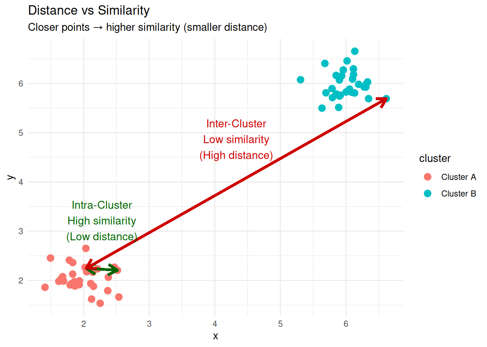
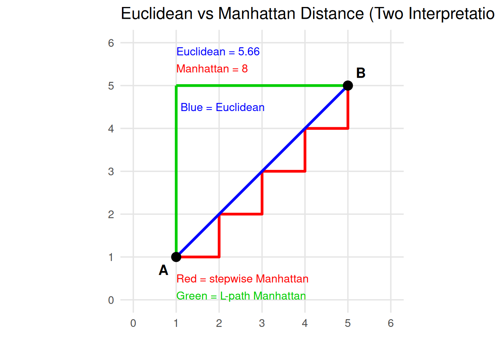
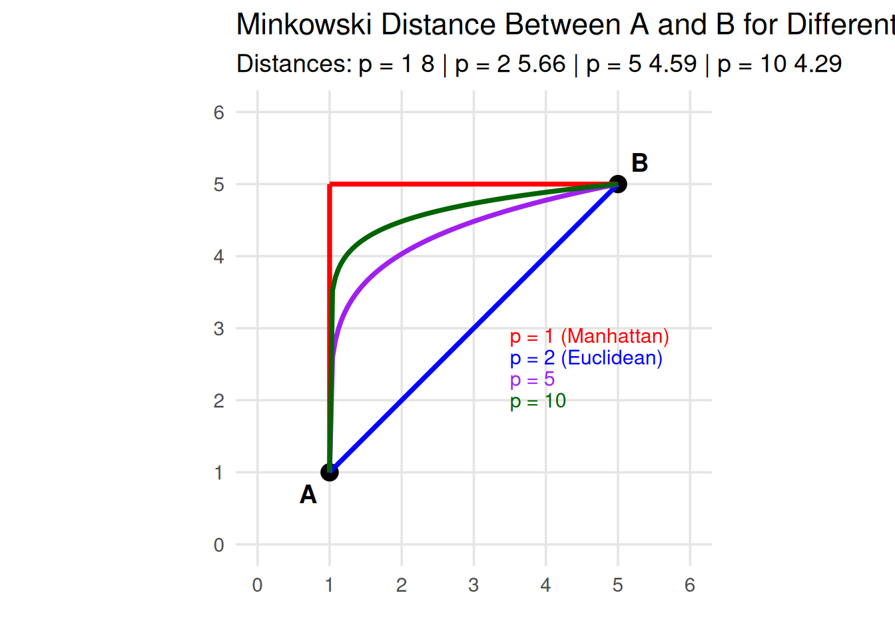
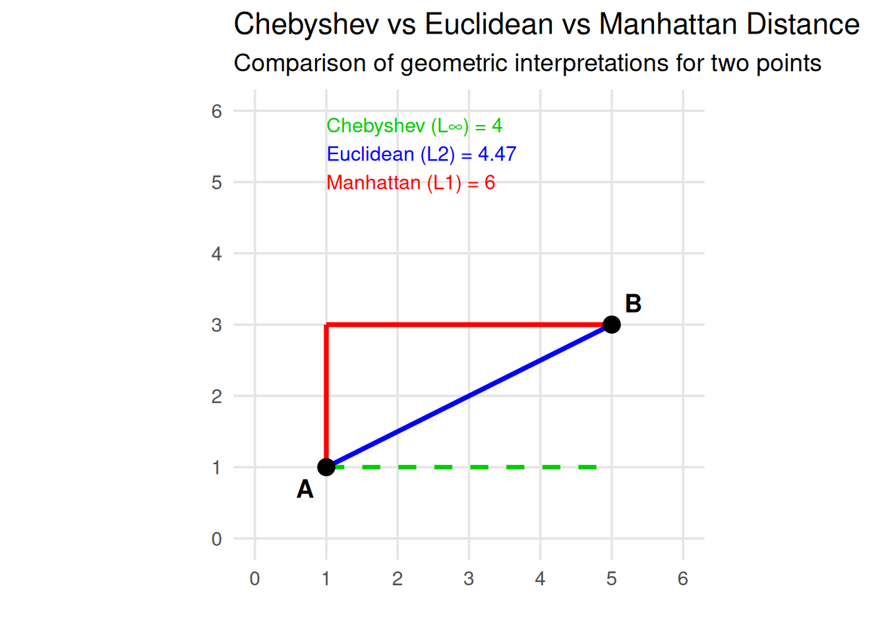
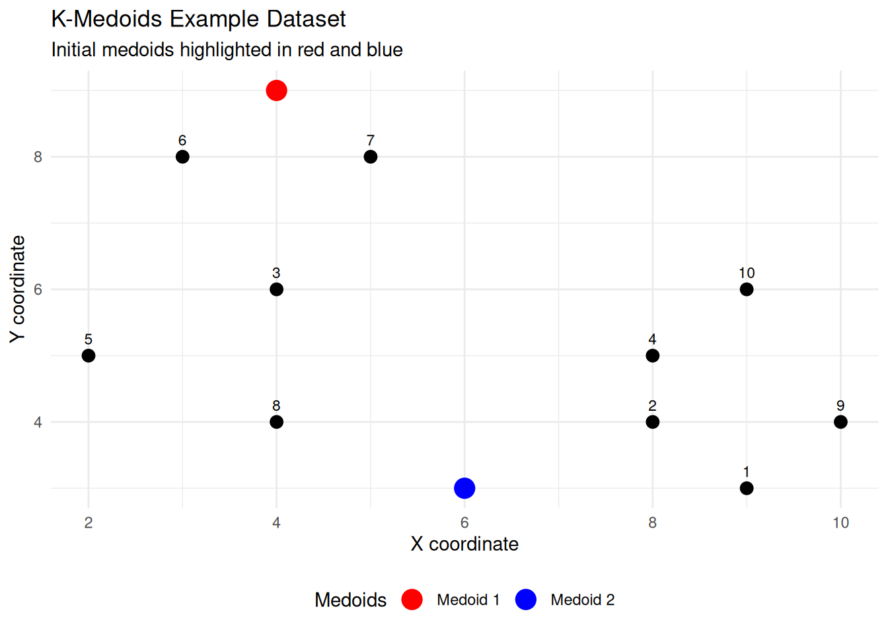

10 Clustering
Cluster analysis, or Clustering, is a technique used to find groups of objects such that the objects within the same group are similar (or closely realted) to one another, while the objects from different groups are dissimilar (or unrelated).
10.1 Applications of Clustering
Clustering techniques are widely used across multiple disciplines to discover patterns, structure data, and support decision-making. Below are some common and illustrative applications.
Customer Segmentation
In marketing and business analytics, clustering helps identify groups of customers with similar behaviors, preferences, or purchasing habits. This segmentation allows companies to optimize advertising strategies, personalize product offerings, and design campaigns for specific focus groups.
Example: Grouping supermarket customers based on purchase frequency, product categories, and spending level.
Web Visitor Segmentation
Web analytics platforms use clustering to classify website visitors according to their browsing patterns, time spent on pages, or interaction behaviors. This segmentation supports personalized content delivery and improved user experience.
Example: Optimizing web navigation or recommendations for distinct user segments such as new visitors vs. returning users.
Data Aggregation and Reduction
Clustering can be used to represent large datasets by a smaller set of representative elements (centroids or medoids).
This reduces computational complexity and facilitates data visualization.
Example:
Reducing the color palette of an image to k representative colors using algorithms like k-means.
Text Collection Organization
In natural language processing (NLP), clustering is applied to group similar documents or texts into topics or themes.
It is particularly useful when the number or nature of topics is unknown in advance.
Example:
Grouping news articles, research abstracts, or emails into topic clusters.
Biology and Taxonomy
In biological sciences, clustering supports the classification of living organisms based on genetic, morphological, or behavioral similarities.
It forms the basis for hierarchical structures such as kingdom, phylum, class, order, family, genus, and species.
Example:
Clustering DNA sequences to identify genetic relationships among species.
Information Retrieval
In computer science and library systems, clustering helps organize large document collections to improve search and retrieval efficiency. By grouping related documents, search engines can return more contextually relevant results.
Example:
Document clustering for semantic search or grouping research papers by field of study.
10.2 Distance and Similarity in Clustering
The notion of distance or similarity lies at the heart of clustering. Since clustering aims to group similar observations together, we must have a way to measure how close or far two observations are from each other in the feature space. These measures quantify the degree of resemblance (similarity) or difference (dissimilarity) between data points.
The main goal is to partition a set of data points into clusters where intra-cluster distances (distances between points within the same cluster) are minimized, and inter-cluster distances (distances between points from different clusters) are maximized.
Thus, the main goal of clustering can be rewritten as:
The main goal is to partition a set of data points into clusters where intra-cluster similarities (similarities between points within the same cluster) are maximized, and inter-cluster similarities (similarities between points from different clusters) are minimized.
To avoid confusion, remember that distance and similarity are inverse concepts: when two objects are close (small distance), they are considered similar (high similarity).
The table below summarizes their relationship and how each measure behaves in clustering.
| Concept | Meaning | High Value Indicates | Low Value Indicates | Goal in Clustering |
|---|---|---|---|---|
| Distance | A measure of dissimilarity between two objects | Objects are far apart (dissimilar) | Objects are close together (similar) | Minimize intra-cluster distances and maximize inter-cluster distances |
| Similarity | A measure of closeness or resemblance between two objects | Objects are close together (similar) | Objects are far apart (dissimilar) | Maximize intra-cluster similarities and minimize inter-cluster similarities |
A distance metric \(d(\mathbf{x}, \mathbf{y})\) measures the dissimilarity between two points \(\mathbf{x}=(x_1, x_2, \ldots, x_p)\) and \(\mathbf{y} = (y_1, y_2, \ldots, y_p)\). Formally, a function \(d: X \times X \rightarrow \mathbb{R}\) is a metric if it satisfies: \[ \begin{aligned} 1.\;& d(\mathbf{x}, \mathbf{y}) \ge 0 && \text{(non-negativity)} \\ 2.\;& d(\mathbf{x}, \mathbf{y}) = 0 \iff \mathbf{x} = \mathbf{y} && \text{(identity)} \\ 3.\;& d(\mathbf{x}, \mathbf{y}) = d(\mathbf{y}, \mathbf{x}) && \text{(symmetry)} \\ 4.\;& d(\mathbf{x}, \mathbf{y}) \le d(\mathbf{x}, \mathbf{z}) + d(\mathbf{z}, \mathbf{y}) && \text{(triangle inequality)} \end{aligned} \]
A similarity measure \(s(\mathbf{x}, \mathbf{y})\) expresses how close or related two points are.
It usually satisfies: \[
\begin{aligned}
1.\;& s(\mathbf{x}, \mathbf{y}) \ge 0 && \text{(non-negativity)} \\
2.\;& s(\mathbf{x}, \mathbf{y}) = s(\mathbf{y}, \mathbf{x}) && \text{(symmetry)} \\
3.\;& s(\mathbf{x}, \mathbf{y}) \in [0, 1] && \text{(boundedness)} \\
4.\;& s(\mathbf{x}, \mathbf{x}) = 1 && \text{(maximum self-similarity)}
\end{aligned}
\] A simple transformation links both concepts: \[
s(\mathbf{x}, \mathbf{y}) = \frac{1}{1 + d(\mathbf{x}, \mathbf{y})}, \quad \text{where } s(\mathbf{x}, \mathbf{y}) \in [0, 1].
\]
10.2.1 Common Distance Metrics
Different clustering algorithms may behave very differently depending on the metric used.
Below are the most widely used distance measures.
10.2.1.1 Euclidean Distance
The most common metric, representing the straight-line distance between two points in \(\mathbb{R}^p\): \[ d_E(\mathbf{x}, \mathbf{y}) = \sqrt{\sum_{i=1}^{p} (x_i - y_i)^2} \]
Note
Euclidean distance is sensitive to scale; therefore, variables should usually be standardized before applying it.
10.2.1.2 Manhattan (or City-Block) Distance
This distance sums the absolute differences across all coordinates: \[ d_M(\mathbf{x}, \mathbf{y}) = \sum_{i=1}^{p} |x_i - y_i| \]
Note
The Manhattan distance is more robust to outliers and suitable when features represent grid-like or discrete steps.

10.2.1.3 Minkowski Distance
A generalization of Euclidean and Manhattan distances, controlled by a parameter \(r\): \[ d_r(\mathbf{x}, \mathbf{y}) = \left( \sum_{i=1}^{p} |x_i - y_i|^r \right)^{1/r} \]
When \(r = 1\), it becomes Manhattan distance.
When \(r = 2\), it becomes Euclidean distance.
Larger values of \(r\) emphasize large coordinate differences.

10.2.1.4 Chebyshev Distance
Also known as the \(L_\infty\) norm, this distance takes the largest coordinate difference: \[ d_C(\mathbf{x}, \mathbf{y}) = \max_i |x_i - y_i| \] It measures how far apart two points are along the dimension where they differ most.

10.2.1.5 Mahalanobis Distance
A scale-invariant distance that accounts for correlations between variables: \[ d_{Mah}(\mathbf{x}, \mathbf{y}) = \sqrt{(x - y)^{\top} \boldsymbol{\Sigma}^{-1} (x - y)} \] where \(\boldsymbol{\Sigma}\) is the covariance matrix of the data. Two points with the same Mahalanobis distance from the mean are equally likely under a multivariate normal model, regardless of the variable scales or correlations.
Tip
Choosing an Appropriate Metric
The choice of metric depends on the data characteristics and the clustering goal:
- Use Euclidean when features are continuous and scaled.
- Use Manhattan for grid-like or sparse data.
- Use Mahalanobis when features are correlated.
- Use Chebyshev for problems sensitive to maximum deviations.
- Use Minkowski for flexible control between Manhattan and Euclidean.
10.2.1.6 Cosine and Correlation Distance
For data where direction or orientation matters more than magnitude — such as text represented by TF-IDF vectors or normalized embeddings — Euclidean distance is not ideal. Instead, we use cosine similarity or correlation distance.
The cosine similarity between two vectors \(\mathbf{x}\) and \(\mathbf{y}\) is defined as \[ s_{\text{cosine}}(\mathbf{x}, \mathbf{y}) = \frac{\mathbf{x} \cdot \mathbf{y}}{\|\mathbf{x}\| \, \|\mathbf{y}\|} \] where \(\mathbf{x} \cdot \mathbf{y}\) is the dot product of the two vectors, and \(\|\mathbf{x}\|\) and \(\|\mathbf{y}\|\) are their**Euclidean norms*.
This similarity measures the cosine of the angle between the two vectors in a multidimensional space.
A value of 1 means the vectors point in the same direction (perfectly similar).
A value of 0 means the vectors are orthogonal (no similarity).
A value of –1 means they point in opposite directions (perfectly dissimilar).
The corresponding cosine distance is: \[ d_{\text{cosine}}(\mathbf{x}, \mathbf{y}) = 1 - s_{\text{cosine}}(\mathbf{x}, \mathbf{y}) \]
Cosine-based metrics are particularly useful for directional data, where the pattern or orientation of features matters more than their magnitude —
for example, in text mining (TF-IDF vectors), recommendation systems, or image feature embeddings.
10.2.2 Distances for Binary Data
When the data are binary (0 or 1), such as presence/absence, success/failure, or yes/no attributes, specialized similarity and distance measures are used.
Let \(o_1, o_2 \in \{0,1\}^d\) be two binary observations described by \(d\) attributes.
We define: \[ \begin{aligned} f_{11} &= \text{number of attributes where } o_1 = 1 \text{ and } o_2 = 1, \\ f_{00} &= \text{number of attributes where } o_1 = 0 \text{ and } o_2 = 0, \\ f_{10} &= \text{number of attributes where } o_1 = 1 \text{ and } o_2 = 0, \\ f_{01} &= \text{number of attributes where } o_1 = 0 \text{ and } o_2 = 1. \end{aligned} \]
10.2.2.1 Simple Matching Coefficient (Similarity)
\[ s_{SMC}(o_1, o_2) = \frac{f_{11} + f_{00}}{f_{11} + f_{00} + f_{10} + f_{01}} = \frac{f_{11} + f_{00}}{d} \]
This coefficient measures the proportion of attributes where the two observations match — whether both are 1s or both are 0s.
10.2.2.2 Simple Matching Distance
\[ d_{SMC}(o_1, o_2) = 1 - s_{SMC}(o_1, o_2) = \frac{f_{01} + f_{10}}{d} \] This represents the proportion of mismatches between two binary objects.
Note
If two binary vectors are identical,\(s_{SMC} = 1\) and \(d_{sMC} = 0\).
If they are completely opposite, \(s_{SMC} = 0\) and \(d_{sMC} = 1\).
The SMC treats \(0\)s and \(1\)s symmetrically, so it is best used when both states are equally meaningful.
10.2.3 Distances for Categorical Data
When data contain categorical or mixed-type variables, standard numeric distances (like Euclidean) are not suitable.
Instead, we use measures that handle qualitative comparisons directly.
Let \(\mathbf{x} = (x_1, \ldots, x_p)\) and \(\mathbf{y} = (y_1, \ldots, y_p)\) be two observations described by \(p\) categorical or mixed-type attributes.
10.2.3.1 Hamming Distance
The Hamming distance counts the number of mismatches between two vectors: \[ \text{d}_{Hamming}(\mathbf{x}, \mathbf{y}) = \sum_{i=1}^{p} \delta(x_i, y_i) \] where \[ \delta(x_i, y_i) = \begin{cases} 0, & \text{if } x_i = y_i \\ 1, & \text{if } x_i \neq y_i \end{cases} \] It measures how many positions differ between two categorical strings or binary vectors.
10.2.3.2 Gower Distance
The Gower distance (Gower 1971) allows comparing mixed-type data (numerical, categorical, binomial).
For two observations \(i\) and \(k\), and each variable \(k\), Gower’s method computes a partial similarity score \(s_{ijk}\) as follows:
Numeric variables (continuous or discrete): \[ s_{ijk} = 1 - \frac{|x_{ik} - x_{jk}|}{R_k} \] where \(R_k\) is the range of variable \(k\).
Categorical (or binary) variables: \[ s_{ijk} = \begin{cases} 1 & \quad \text{if} \quad x_{ik} = x_{jk}\\ 0 & \quad \text{if} \quad x_{ik} \neq x_{jk} \end{cases} \] Then, the overall similarity between \(i\) and \(j\) is \[ S_{ij} = \frac{\sum_k s_{ijk} \delta_{ijk}}{\sum_k \delta_{ijk}} \] where \(\delta_{ijk} = 1\) if variable \(k\) is valid for both \(i\) and \(j\) (i.e, non-missing), else \(0\).
Finally, to convert similarity to a distance, one often uses \[ D_{ij} = 1 - S_{ij} \]
As an example, consider the following table which shows information about a number of individuals (identified by “Subject ID”) with four attributes:
- Age – a continuous numeric variable
- Handedness – a binary variable, whether the individual is left- or right-handed.
- Eye colour - a categorical variable
- Knows Python - a dichotomous variable (while two people who know python may have a similar education, both of them not knowing Python does not imply they have similar backgrounds).
| Subject ID | Age | Handedness | Eye Colour | Knows Python |
|---|---|---|---|---|
| 001 | 28 | Right | Blue | Yes |
| 002 | 34 | Left | Blue | No |
| 003 | 22 | Right | Green | Yes |
| 004 | 45 | Right | Hazel | No |
| 005 | 30 | Left | Brown | Yes |
Let us look at individuals 001 and 002, and calculate the score for each variable in turn:
Age: \[ s_{\textrm{age}} = 1 - \frac{|28 - 34|}{23} = 0.74 \] where the range \(R_k = 23\) is the range of ages in the sample, which has a minimum of \(22\) and a maximum of \(45\).
Handedness:
Since the individuals have different handedness, \(s_{\text{handedness}} = 0\).
Eye colour: They have the same eyes, \(s_{\text{eyes}} = 1\).
Knows Python:
Individuals 001 knows python whereas 002 does not; so, \(s_{\text{python}} = 0\).
We have no missing data, so all the \(\delta_{ijk} = 1\). The overall similarity score between 001 and 002 is therefore \[ S = \frac{0.74 \times 1 + 0 \times 1 + 1 \times 1 + 0 \times 1}{1 + 1 + 1 + 1} = \frac{1.74}{4} = 0.435 \] So, the Gower distance between these two individuals is \[ D = 1 - 0.435 = 0.565 \]
Repeating the calculation for all pairs of indivials, we obtain the distance matrix, which can be used for clustering them into groups.
For calculating Gower distance in R, we can use daisy() from the library cluster. However, it is important to note that always convert categorical characters to factors before using this function.
As you see that the individuals who are most similar are 001 and 003 \((D = 0.315)\) and the most different are 004 and 005 \((D = 0.913)\).
10.2.4 Visualizing distance matrices
Datasets usually contain many observations (more than just two points).
When we compute pairwise distances between all observations, we obtain a distance matrix — a square table where each cell represents the dissimilarity between two observations.
Mathematically, if a dataset has \(n\) observations, the distance matrix has \(n \times n\) entries: \[ D_{ij} = d(\mathbf{x}_i, \mathbf{x}_j) \] where \(D_{ij}\) is the distance between observation \(i\) and \(j\).
Because this matrix contains all pairwise comparisons, it provides a complete picture of how observations relate to one another.
However, as the number of observations grows, the matrix quickly becomes difficult to interpret numerically — it is just a sea of numbers.
To extract insights, we often visualize the distance matrix as a heatmap or similarity map.
Visualizing distance matrices helps us:
Detect structure – clusters appear as blocks or dark/light patches.
Spot outliers – points that are dissimilar from everyone else.
Compare metrics – see how distance measures produce different patterns.
Build intuitio – for what closeness or difference means in multidimensional space.
The color level is proportional to the value of the dissimilarity between observations: pure red if \(\text{dist}(\mathbf{x}_i, \mathbf{x}_j) = 0\) nad pure blue if \(\text{dist}(\mathbf{x}_i, \mathbf{x}_j) = 1\), here. Objects belonging to the same cluster are displayed in consecutive order.
In this example, subjects 001 and 002 are quite similar (close in age, same eye color). Subject 004 (older, hazel eyes, does not know Python) stands out as most dissimilar from others.
1. Create two 3-dimensional points and calculate the distance
Let \(A = (1, 3, 5)\) and \(B = (4, 9, 6)\).
Compute manually and in R the following distances between \(A\) and \(B\):
Euclidean
Manhattan
Minkowski with \(r = 3\)
Chebyshev
2. Explore sensitivity to scale
Multiply the second coordinate of both points by 10 and recompute all distances. How does this change the results?
Two species are described by four binary characteristics:
| Feature | Species A | Species B |
|---|---|---|
| Has fins | 1 | 1 |
| Lays eggs | 1 | 0 |
| Has scales | 1 | 1 |
| Warm-blooded | 0 | 1 |
Compute manually:
- ( f_{11}, f_{00}, f_{10}, f_{01} )
- The Simple Matching Coefficient (SMC)
- The Simple Matching Distance (SMD)
Verify your results using R.
Which pair of features contributes to dissimilarity?
Two students rate three projects as “Good”, “Average”, or “Poor”:
| Project | Student 1 | Student 2 |
|---|---|---|
| A | Good | Good |
| B | Poor | Average |
| C | Good | Poor |
Compute the Hamming distance (number of mismatches).
Hint: Use
data[] <- lapply(data, function(col) if (is.character(col)) as.factor(col) else col)We want to analyse the flower dataset which is available at library cluseter.
Based on the following information, a) find the best distance matrix. and b) visulize the distance matrix.
library(cluster)
data(flower)
head(flower, 3) V1 V2 V3 V4 V5 V6 V7 V8
1 0 1 1 4 3 15 25 15
2 1 0 0 2 1 3 150 50
3 0 1 0 3 3 1 150 50#Data structure
str(flower)'data.frame': 18 obs. of 8 variables:
$ V1: Factor w/ 2 levels "0","1": 1 2 1 1 1 1 1 1 2 2 ...
$ V2: Factor w/ 2 levels "0","1": 2 1 2 1 2 2 1 1 2 2 ...
$ V3: Factor w/ 2 levels "0","1": 2 1 1 2 1 1 1 2 1 1 ...
$ V4: Factor w/ 5 levels "1","2","3","4",..: 4 2 3 4 5 4 4 2 3 5 ...
$ V5: Ord.factor w/ 3 levels "1"<"2"<"3": 3 1 3 2 2 3 3 2 1 2 ...
$ V6: Ord.factor w/ 18 levels "1"<"2"<"3"<"4"<..: 15 3 1 16 2 12 13 7 4 14 ...
$ V7: num 25 150 150 125 20 50 40 100 25 100 ...
$ V8: num 15 50 50 50 15 40 20 15 15 60 ...10.3 Partition-Based Clustering: \(k\)-Means and \(k\)-Medoids
Partitioning clustering are clustering methods used to classify observations, within a dataset, into multiple groups based ion their similrity. The algorithms require the analyst to specify the number of clusters to be generated.
The commonly used partitioning clustering includes:
- \(K\)-means clustering (MacQueen 1967) in which ,each cluster is represented by the center or means of the data points belonging to the cluster. The \(K\)-means method is sensitive to anomalous data points and outliers.
- \(K\)-medoids clustering or PAM (Partitioning Around Medoids) (Kaufman and Rousseeuw 1990) in which , each cluster is reprsented by one of the objects in the cluster. PAM is less sensitive to outliers compared to \(K\)-means.
- CLARA (Clustering Large Applications) algorithm, which is an extension to PAM adapted for large data sets.
10.3.1 \(K\)-Means Clustering
K-Means aims to partition \(n\) observations into \(K\) clusters such that each observation belongs to the cluster with the nearest centroid (mean of points).
Each cluster is represented by its centroid, which may not be an actual data point.
\(K\)-means basic ideas
This basic idea behind \(K\)-means clustering consists of defining clusters so that the total intra-cluster variation (known as total within-cluster variation) is minimized.
There are several \(K\)-means algorithms available. The standard algorithm is the Hartigan-Wong algorithm (Hartigan and Wong 1979) which defines the total within-cluster variation as the sum of squared distances Euclidean distances between items and the corresponding centroid: \[ W(C_k) = \sum_{x_i \in C_k} (x_i - \mu_k)^2 \] where \(x_i\) design a data point belonging to the cluster \(C_k\) and \(\mu_k\) is the mean value of the points assigned to the cluster \(C_k\).
Each observation (\(x_i\)) is assigned to a given cluster such that the sum of squares (SS) distances of the observation to their assigned cluster \(\mu_k\) is minimum.
We define the total within-cluster variation as follow: \[ \text{tot.withinss} = \sum_{k=1}^K W(C_k) = \sum_{k=1}^K \sum_{x_i \in C_k} (x_i - \mu_k)^2 \]
The total within-cluster sum of square measures the compactness (i.e. goodness) of the clustering and we want it to be as small as possible.
\(K\)-means Algorithm
Given a dataset \(\mathbf{X}= \{\mathbf{x}_1, \mathbf{x}_2, \ldots, \mathbf{x}_n\}\):
- Choose the number of clusters \(K\).
- Initialize \(k\) centroids randomly.
- Assign step: Assign each observation \(\mathbf{x}_i\) to the nearest centroid based on the Euclidean distance between the object and the centroid:
- \[ c_i = \arg\min_k \|\mathbf{x}_i - \mu_k\|^2 \] where \(\mu_k\) is the \(k\)st centroid.
- Update step: Recalculate each centroid as the mean of points in its cluster: \[ \mu_k = \frac{1}{n_k} \sum_{\mathbf{x}_i \in C_k} \mathbf{x}_i \]
- Repeat steps 3–4 until centroids stop changing (convergence) or the maximum number of iterations is reached.
For better understanding, see this video
10.3.1.1 Properties and Limitations of \(K\)-Means
Although \(K\)-means is one of the most popular clustering algorithms, its effectiveness depends on the structure and scale of the data. Understanding its limitations helps decide when to use it — and when to choose a more robust alternative like \(K\)-Medoids.
10.3.1.1.1 Data Type and Cluster Shape
\(K\)-Means works best when:
All variables are numeric
and measured on a comparable scale.
The clusters are spherical (or roughly circular in 2D).
Each cluster has similar variance and density.
When clusters are elongated, overlapping, or non-spherical, \(K\)-Means may assign points incorrectly because it relies on Euclidean distance.
10.3.1.1.2 Sensitivity to Scale
In clustering, the distance between data points determines how groups are formed.
If variables are measured on very different scales (for example, income in euros and age in years), the variable with the largest numerical range will dominate the distance calculation. As a result, the algorithm may ignore other variables, even if they carry meaningful structure. To correct this imbalance, we use scaling transformations, which adjust the magnitude or spread of each variable before computing distances.
Normalization (Min–Max Scaling) Normalization rescales all variables to a fixed range, usually between \(0\) and \(1\): \[ x' = \frac{x - \min(x)}{\max(x) - \min(x)} \] This transformation preserves the shape of the distribution but ensures all features contribute equally in magnitude to the distance measure. It is particularly effective when all features have bounded ranges or similar distributions.
Standardization (Z-score Scaling) Standardization rescales variables so they have mean 0 and standard deviation 1: \[ x' = \frac{x - \bar{x}}{s_x} \] where \(\bar{x}\) is the mean and \(s_x\) is the standard deviation.
This approach centers the data and adjusts for variance, which helps when features have different dispersions or units of measurement. Standardization is preferred when features are expected to follow roughly Gaussian distributions, or when outliers might distort min–max scaling.
Important
Why It Matters for \(k\)-Means and Similar Algorithms
\(K\)-means relies on Euclidean distance, which is sensitive to scale. Without scaling, one feature can dominate, producing distorted clusters.
After scaling or standardization, all variables contribute more fairly, and the clusters tend to reflect combined variation across features.
Scaling can change the cluster boundaries, but it does not change the underlying data relationships — it only ensures that distances are comparable.
We will show the effect of normalization and standardization on the data.
Now, we apply \(K\)-means on the raw dataset.
Now, we normalize the dataset and apply \(k\)-means.
It is the time to standarize the dataset before applyong \(k\)-means.
10.3.1.2 Measures of Cluster Quality
To evaluate and compare clustering results, we rely on internal validation measures — those that assess how compact and well-separated the clusters are, using only the data itself.
The most common measures include:
10.3.1.2.1 Within-Cluster Sum of Squares (WSS)
The Within-Cluster Sum of Squares measures how tightly the data points in a cluster are grouped around their centroid. \[ \text{WSS} = \sum_{k=1}^{K} \sum_{\mathbf{x}_i \in C_k} \|\mathbf{x}_i - \boldsymbol{\mu}_k\|^2 \] where \(C_k\) is the set of points in cluster \(k\), \(\boldsymbol{\mu}_k\) is the centroid of cluster \(k\), and \(\|\cdot\|^2\) shows the squared Euclidean distance between a point and its centroid.
A smaller WSS means more compact clusters.
10.3.1.2.2 Between-Cluster Sum of Squares (BSS)
The Between-Cluster Sum of Squares measures how far apart the cluster centroids are from the overall mean of the dataset. \[ \text{BSS} = \sum_{k=1}^{K} n_k \| \boldsymbol{\mu}_k - \boldsymbol{\mu} \|^2 \] where \(n_k\) is the number of points in cluster \(k\), \(\boldsymbol{\mu}_k\) is the centroid of cluster \(k\), and \(\boldsymbol{\mu}\) is the global mean of all data points.
A larger BSS means better separation between clusters.
10.3.1.2.3 Total Sum of Squares (TSS)
The Total Sum of Squares represents the overall variation in the dataset: \[ \text{TSS} = \sum_{i=1}^{n} \|\mathbf{x}_i - \boldsymbol{\mu}\|^2 \]
This relationship always holds: \[ \text{TSS} = \text{BSS} + \text{WSS} \]
This decomposition allows us to express clustering performance as a proportion of explained variance: \[ \text{Ratio} = \frac{\text{BSS}}{\text{TSS}} \]
A higher ratio means that the clusters explain a greater proportion of the data’s variance.
10.3.1.2.4 Silhouette Coefficient
The Silhouette Coefficient combines cohesion (how close points are within a cluster) and separation (how far points are from other clusters): \[ s(i) = \frac{b(i) - a(i)}{\max(a(i), b(i))} \] where \(a(i)\) is the average distance from point \(i\) to all other points in its cluster, and \(b(i)\) is the smallest average distance from point \(i\) to points in another cluster.
Values range from \(–1\) to \(1\), where values close to \(1\) indicate that observations are well-clustered, values around \(0\) suggest that points lie near cluster boundaries, and negative values indicate that observations are likely misclassified or assigned to the wrong cluster.
Note
Summary
| Measure | Description | Ideal Value |
|---|---|---|
| WSS | Compactness within clusters | Low |
| BSS | Separation between clusters | High |
| BSS / TSS | Proportion of explained variance | High |
| Silhouette | Cohesion and separation combined | Close to 1 |
Important
Good clustering minimizes WSS and maximizes BSS, producing compact, well-separated groups.
The Elbow Method helps find a balance between simplicity (few clusters) and accuracy (tight, distinct groups).
Implementation in R
The standard R function for \(K\)-means clustering is stats::kmeans() which simplified format is as follow:
kmeans(x, centers, iter.max = 10, nstart = 1)where: - x: numeric matrix, numeric data frame or a numeric vevtor - centers: possible values are the number of clusters (\(k\)) or a set of initial (distinct) cluster centers. If a number, a random set of (distinct) rows in \(x\) is chosen as the initial centers. - iter.max: the maximum number of iterations allowed. Default value if \(10\). - nstart: the number of random starting partitions when centers is a number. Trying nstart > 1 is often recommended.
To create a beautiful graph of the clusters generated with the kmeans() function, will use the factoextra package.
Computing \(K\)-means clustering
As \(K\)-means clustering algorithm starts with \(K\) randomly selected centroids, it is always recommended to use the set.seed() function in order to set a seed for R’s random number generator. The aim of using this function is to make reproducible the results.
The R code below performs \(K\)-means clustering with \(K = 4\):
set.seed(123)
km.res <- kmeans(df, k = 4, nstart = 25)
Tip
Actually, \(K\)-means starts by randomly choosing \(K\) points as initial centroids. Depending on these starting points, the algorithm can converge to different local minima — meaning the results may vary across runs. So, nstart means number of random initial sets of centroids to try and then, R will run the algorithm that many times and keep the best result (the one with the lowest total within-cluster sum of squares).
The default value of nstart in R is one. But, it is strongly recommended to compute \(K\)-means clustering with a large value of nstart such as \(25\) or \(50\), in order to have a more stable result.
With the function print(), the results of kmeans() that for example in this note, saved in km.res
print(km.res)The printed output displys: - the cluster means or centers, that is a matrix which rows are cluster number and columns are variables. - the clustering vector which is a vector of integers (from 1 to \(K\)) indicating the cluster to which each point is allocated.
Note
It is possible to compute the mean of each variable in the dataset by clusters using the original dataset.
aggregate(df, by = list(cluster=km.res$cluster), mean)
Note
It the user is intersted in adding the clusters to the original data, use the following R code
cbind(df, cluster = km.res$cluster)kmeans() function returns a list of components, including: - cluster: a vector of integers (from \(1\) to \(k\)) indicating the cluster to which each point is allocated. - centers: a matrix of cluster centers (cluster means) - totss: the total sum of squares (TSS). It measures the total variance in the data. - withinss: vector of within-cluster sum of squares, one component per cluster - tot.withinss: total within-cluster sum of squares, i.e., \(\text{sum}(withinss)\) - betweenss: the between-cluster sum of squares, i.e., totss - tot.withinss - size: the number of observations in each cluster
These components can be accessed as follow:
# Cluster number for each of the observations
km.res$cluster
# Cluster size
km.res$size
# Cluster means
km.res$centersVisualizing \(K\)-means Clusters
It is a good idea to plot the cluster results. These can be used to assess the choice of the number of clusters as well as comparing two different cluster analyses.
The idea is to visualize the data in scatter plot with coloring tach data point according to its cluster assignment.
The problem is that the data contains more than 2 variables and the question is what variables to choose for the \(x\)-\(y\) scatter plot. A solution is to reduce the number of dimensions by applying a dimensionality reduction algorithm, such as principal component analysis (PCA).
In other words, if we have a multi-dimensional dataset, a solution is to perform PCA and to plot data points according to the first two principal components coordinates.
The function factoextra::fviz_cluster() can be used to easily visulize \(K\)-means clusters. It takes \(K\)-means results and the original data as arguments. In the resulting plot, observations are represented by points, using orincipal components if the number of variables is greater than \(2\). It is also possible to draw concentration ellipse around each cluster.
fviz_cluster(km.res, data = df,
palette = c("#2E9FDF", "#00AFBB", "#E7B800", "#FC4E07"), #Define colors
ellipse.type = "euclid", # Concentration ellipse
star.plot = TRUE, # Add segments from centroids to items
repel = TRUE, # Avoid label overplotting (slow)
ggtheme = theme_minimal()
)
Important
\(K\)-means clustering is very simple and fast algorithm. It can efficiently deal with very large data sets.
Important
\(K\)-means has some weaknesses, including:
- It assumes prior knowledge of the data and requires the analyst to choose the appropriate number of cluster (\(k\)) in advance.
Solution: Compute \(K\)-means for a range of \(K\) values, for example by varying \(k\) between \(2\) and \(10\). Then choose the best \(k\) by comparing the clustering results obtained for different \(k\) values.
- The final results obtained is sensitive to the initial random selection of cluster centers. Why is this a problem? Because, for every different run of the algorithm on the same data set, you may choose different set of initial centers. This may lead to different clustering results on different runs of the algorithm.
Solution: Compute \(K\)-means algorithm several times with different initial cluster centers. The run with the lowest total within-cluster sum of square is selected as the final clustering solution.
- It is sensitive to outliers.
Solution: To avoid distortions caused by excessive outliers, it is possible to use PAM algorithm, which is less sensitive to outliers.
10.3.1.3 Analysis of iris Dataset
The classic iris dataset contains \(150\) flower observations from three species (setosa, versicolor, virginica). Each observation has four numeric features: Sepal.Length, Sepal.Width, Petal.Length, and Petal.Width
Suppose that we do not know that there are three groups and the goal is to determine the optimal number of clusters using Elbow method
The plot represents the variance within the clusters. It decreases as \(k\) increases, but it can be seen a bend (or elbow) at \(k = 3\), matching the three known species.
Another way to visualize the elbow method for choosing the optimal number of clusters is by using the function factoextra::fviz_nbclust(). We can also add a vertical dashed line to indicate the chosen value of \(k\).
Now, we apply \(k\)-means algorithm with \(k = 3\).
We compute cluster quality measures.
Note
What are “discriminative features”?
Discriminative features are those that best separate groups or clusters in your data. They are the variables that most strongly differentiate one cluster (or class) from another.
There are two most famous approach to find discriminative features:
Exploratory approach
Statistical approach
Exploratory approach
In this plot, you will notice that:
Setosa is perfectly separated in the
Petal.Length–Petal.Widthplane.Versicolor and Virginica overlap slightly but still show visible separation.
That is why we often choose Petal.Length and Petal.Width for visualization — they are the most discriminative pair of features.
Statistical approach We can quantify which features are most discriminative by computing, for each variable: - The between-group variance (BSS) - The within-group variance (WSS) and comparing their ratio.
The higher this ratio, the better that feature separates the species.
In this results, Petal.Width is clearly the most discriminative feature.
At first glance, it seems that Sepal.Width (124.96) should be more discriminative than Petal.Length (79.51) because its ratio is higher — but this needs context
What the ratio measures? The ratio BSS/WSS BSS/WSS for each feature is: \[ \text{Ratio} = \frac{Between-Class Variance}{Within-Class Variance} \] This tells you, for that one variable alone, how distinct the species means are compared to the variability within each species.
So, mathematically, if Sepal.Width has a higher ratio, it means that species differ more in Sepal.Width (on average) than they do within themselves. But “discriminative” depends on combined separability
The tricky part is that Sepal.Width alone does not visually separate the species well, even if its numeric ratio looks high. Let us check the data visually:
You see that: - For Sepal.Width, there is a lot of overlap between Versicolor and Virginica. The means differ, but not enough to separate groups clearly.
- For
Petal.Length, Setosa is completely separated, and Versicolor/Virginica overlap less.
So even though Sepal.Width’s ratio is high, its overlap pattern means it is less useful for distinguishing all three species.
Tip
The BSS/WSS ratio is a helpful indicator, but not the whole story. Always complement numerical measures with visual inspection.
Now, based on the most discriminative features, Petal.Length and Petal.Width, we visualize the clusters.
Another way to visulize \(K\)-means clusters is using the function fviz_cluster() that used the PCA (the iris_data has 4 variables) with the following code
We can also evaluat clustering with the Silhouette coefficient
The average silhouette width (displayed in the summary) gives an overall quality score.
Values > \(0.5\) indicate clear, well-separated clusters.
Values around \(0.25\)–\(0.5\) indicate overlapping clusters.
Values < \(0.25\) indicate poor structure or misclassification.
In the iris dataset, the average silhouette is typically around \(0.55\)–\(0.60\), confirming that \(k=3\) is a reasonable choice.
- Setosa usually has near-perfect silhouette values, while Versicolor and Virginica show some overlap — as expected.
We can compute the average silhouette width for different numbers of clusters.
Based on the Silhouette plots, the highest average silhouette width occurs at \(k = 2\). This means that, mathematically, dividing the data into two clusters gives the tightest and most well-separated grouping according to the Silhouette metric.
However, the best numerical score does not always mean the most meaningful clustering.
At \(k =2\), the algorithm merges two of the real Iris species (versicolor and virginica) into a single cluster. The result has high compactness, but low interpretive accuracy.
At \(k = 3\), the average silhouette width is slightly lower, but the clusters correspond more closely to the true biological species. This result is more meaningful, even if slightly less compact.
Thus, the Silhouette Coefficient and the Elbow Method together suggest that: - \(k=2\) yields the most compact clustering, - but \(k=3\) represents the optimal trade-off between cluster compactness and real-world interpretability
Use the built-in dataset USArrests, which contains statistics on violent crime rates in the 1970s for 50 U.S. states.
data("USArrests")Standardize all numeric features before applying \(k\)-Means using this R code:
us_data <- scale(USArrests)Elbow Method
Compute the total within-cluster sum of squares (WSS) for \(k=1\) to \(10\).
Plot the results.
Identify the “elbow” point.
Silhouette Method
Compute the average silhouette width for \(k=2\) to \(10\).
Plot the results using the same approach as in the Iris example.
Identify the \(k\) that maximizes the silhouette width.
This exercise demonstrates how \(k\)-Means clustering can be used beyond data analysis — for image compression.
Each color in an image can be treated as a data point in RGB space, and clustering reduces the number of colors while preserving the main structure.
Load and visualize an image.
library(jpeg)
library(ggplot2)
library(dplyr)
# Read example image from R base (or provide your own file path)
url <- "https://upload.wikimedia.org/wikipedia/commons/3/3f/JPEG_example_flower.jpg"
temp <- tempfile(fileext = ".jpg")
download.file(url, temp, mode = "wb")
img <- readJPEG(temp)
# Convert to data frame
img_df <- data.frame(
R = as.vector(img[,,1]),
G = as.vector(img[,,2]),
B = as.vector(img[,,3])
)
# Sample only a few thousand pixels to avoid memory explosion
set.seed(123)
img_sample <- img_df %>% sample_n(5000)Determine the optimal number of clusters.
Apply \(k\)-means clustering to the RGB values of the image (img_sample) for \(k = 2\) to \(10\), using nstart = 10. Then, use both the Elbow Method and the Silhouette Coefficient to decide which \(k\) gives the best balance between cluster compactness and separation. Do both methods suggest the same number of clusters?
When you decide about the optimal \(k\), with the following code, you can compare the original and compressed image.
set.seed(123)
k <- 'put the optimal value you found'
km_colors <- kmeans(img_sample, centers = k, nstart = 10)
# Replace each pixel with its cluster centroid color
compressed_img <- km_colors$centers[km_colors$cluster, ]
compressed_img <- array(compressed_img, dim = dim(img))
par(mfrow = c(1, 2))
plot(0, type = "n", xlim = c(0, 1), ylim = c(0, 1),
xlab = "", ylab = "", axes = FALSE, main = "Original Image")
rasterImage(img, 0, 0, 1, 1)
plot(0, type = "n", xlim = c(0, 1), ylim = c(0, 1),
xlab = "", ylab = "", axes = FALSE, main = paste("Compressed Image (k =", k, ")"))
rasterImage(compressed_img, 0, 0, 1, 1)10.3.2 \(K\)-Medoids Clustering
The \(k\)-medoids algorithm is a partitioning clustering method closely related to \(k\)-means, but instead of using the mean (centroid) of points to represent a cluster, it uses an actual observation (medoid) — the most centrally located data point within that cluster.
Formally, a medoid is the point whose average dissimilarity to all other points in the cluster is minimal. i.e, \[ m_k = \arg\min_{\mathbf{x}_i \in C_k} \sum_{\mathbf{x}_j \in C_k} d(\mathbf{x}_i,\mathbf{x}_j) \] where \(C_k\) is the set of points assigned to cluster \(k\), and \(d(\mathbf{x}_i,\mathbf{x}_j)\) is a chosen distance or dissimilarity measure (e.g., Euclidean, Manhattan, etc.)
\(K\)-medoid is a robust alternative to \(K\)-means clustering. This means that, the algorithm of clusters to be generated (like in \(K\)-means clustering). A useful approach to determine the optimal number of clusters is the silhouette method.
The most common \(K\)-medoids clustering methods is the PAM (Partitioning Around Medoids) algorithm (Kaufman and Rousseeuw 1990)
10.3.2.1 PAM Algorithm
The PAM algorithm is based on the search for \(K\) representative objects or medoids among the observations of the data set. After finding a set of \(K\) medoids, clusters are constructed by assigning each observation to the nearest medoid. Next, each selected medoid \(m\) and each non-medoid data point are swapped and the objective function is computed. The objective function corresponds to the sum of the dissimilarities of all objects to their nearest medoid. The SWAP step attemps to improve the quality of the clustering by exchanging selected objects (medoids) and non-selected objects. If the objective function can be reduced by interchanging a selected object with an unselected object, then the swap is carried out. This is continued until the objective function can no longer be decreased. The goal is to find \(k\) representative objects which minimize the sum of the dissimilarities of the observations to their closest representative object.
In summary, PAM algorithm is:
- Initialize: Select \(k\) representative objects (medoids) randomly from the dataset.
- Calculate the distance (dissimilarity) matrix if it was not provided.
- Assign: Assign each remaining point to the nearest medoid based on the chosen distance metric.
- Update: For each cluster, try swapping the medoid with another point from the same cluster and compute the total cost: \[ \text{Cost} = \sum_{i=1}^n \min_k d(\mathbf{x}_i, m_k) \] If a swap reduces the cost, keep it.
- Iterate: Repeat assignment and update steps until the medoids no longer change.
Important
The \(K\)-medoids algorithm minimizes a sum of dissimilarities, not squared distances. Thus, the cluster representative is always a real observation, which makes the method robust when data contain noise, outliers, or mixed types.
Note
The PAM algorithm works with a matrix of dissimilarity, and to compute this matrix the algorithm can use two metrics: 1. The euclidean distance 2. The Manhattan distance
In practice, you should get similar results most of time, using either euclidean or Manhattan distance. If the dataset contains outliers, Manhattan distance should give more robust results, whereas euclidean would be influenced by unusual values.
10.3.2.2 Example
Consider the following example
| X | Y | |
|---|---|---|
| 1 | 9 | 3 |
| 2 | 8 | 4 |
| 3 | 4 | 6 |
| 4 | 8 | 5 |
| 5 | 2 | 5 |
| 6 | 3 | 8 |
| 7 | 8 | 8 |
| 8 | 4 | 4 |
| 9 | 10 | 4 |
| 10 | 9 | 6 |
library(tibble)
# Dataset (same as your table)
points <- tibble::tibble(
ID = 1:10,
X = c(9, 8, 4, 8, 2, 3, 5, 4, 10, 9),
Y = c(3, 4, 6, 5, 5, 8, 8, 4, 4, 6)
)
points# A tibble: 10 × 3
ID X Y
<int> <dbl> <dbl>
1 1 9 3
2 2 8 4
3 3 4 6
4 4 8 5
5 5 2 5
6 6 3 8
7 7 5 8
8 8 4 4
9 9 10 4
10 10 9 6Assume \(k = 2\) and use the specified points (\(m_1 = (4,6)\)) and \(m_2 = (9,3)\)
library(ggplot2)
# Define medoid points
medoids <- data.frame(
X = c(4, 6),
Y = c(9, 3),
label = c("Medoid 1", "Medoid 2")
)
# Scatter plot
ggplot(points, aes(x = X, y = Y)) +
geom_point(size = 3, color = "black") +
geom_point(data = medoids, aes(x = X, y = Y, color = label), size = 5) +
geom_text(aes(label = ID), vjust = -1, size = 3) +
scale_color_manual(values = c("Medoid 1" = "red", "Medoid 2" = "blue")) +
labs(
title = "K-Medoids Example Dataset",
subtitle = "Initial medoids highlighted in red and blue",
x = "X coordinate",
y = "Y coordinate",
color = "Medoids"
) +
theme_minimal() +
theme(legend.position = "bottom")
Let consider we use Manhattan distance because it is easy to compute and commonly used with \(K\)-medoids.
Step 1 – Assign each point to the nearest medoid
| ID | X | Y | d to (4,6) | d to (9,3) | Assign |
|---|---|---|---|---|---|
| 1 | 9 | 3 | 8 | 0 | C2 |
| 2 | 8 | 4 | 6 | 2 | C2 |
| 3 | 4 | 6 | 0 | 8 | C1 |
| 4 | 8 | 5 | 5 | 3 | C2 |
| 5 | 2 | 5 | 3 | 9 | C1 |
| 6 | 3 | 8 | 3 | 11 | C1 |
| 7 | 5 | 8 | 3 | 9 | C1 |
| 8 | 4 | 4 | 2 | 6 | C1 |
| 9 | 10 | 4 | 8 | 2 | C2 |
| 10 | 9 | 6 | 5 | 3 | C2 |
Clusters after assignment is:
- \(C_1(m_1) = \{3,5,6,7,8\}\) (around \((4,6)\))
- \(C_2(m_2) = \{1,2,4,9,10\}\) (around \((9,3)\))
The total cost (sum of within-cluster distances) is \[ C_1 + C_2 = 9 + 11 = 20 \] where: - \(C_1 = 0 + 3 + 3 + 3 + 2 = 11\) - \(C_2 = 0 + 2 + 2 + 2 + 3 = 9\)
** Step2** – Update (try swaps)
We evaluate each point in a cluster as a potential medoid, computing the sum of Manhattan distances to all other points in that cluster.
Cluster C1 = {3,5,6,7,8}
| Candidate (ID) | Sum of distances |
|---|---|
| 3 (4,6) | 11 ← best |
| 5 (2,5) | 16 |
| 6 (3,8) | 14 |
| 7 (5,8) | 16 |
| 8 (4,4) | 15 |
Cluster C2 = {1,2,4,9,10}
| Candidate (ID) | Sum of distances |
|---|---|
| 1 (9,3) | 10 |
| 2 (8,4) | 8 ← best |
| 4 (8,5) | 9 |
| 9 (10,4) | 10 |
| 10 (9,6) | 11 |
Update result:
- Medoid for \(C_1\) stays ID 3 (\((4,6)\))
- Medoid for \(C_2\) changes to ID 2 (\((8,4)\)) which it improves the total cost.
After updating the medoids, the next step is to recompute the total cost (sum of distances from each point to its nearest medoid).
| ID | X | Y | d to (4,6) | d to (8,4) | min d | Assign |
|---|---|---|---|---|---|---|
| 1 | 9 | 3 | 8 | 2 | 2 | C2 |
| 2 | 8 | 4 | 6 | 0 | 0 | C2 |
| 3 | 4 | 6 | 0 | 6 | 0 | C1 |
| 4 | 8 | 5 | 5 | 1 | 1 | C2 |
| 5 | 2 | 5 | 3 | 7 | 3 | C1 |
| 6 | 3 | 8 | 3 | 9 | 3 | C1 |
| 7 | 5 | 8 | 3 | 7 | 3 | C1 |
| 8 | 4 | 4 | 2 | 4 | 2 | C1 |
| 9 | 10 | 4 | 8 | 2 | 2 | C2 |
| 10 | 9 | 6 | 5 | 3 | 3 | C2 |
The total cost (sum of within-cluster distances) is \[ C_1 + C_2 = (0+1+3+3+3+2) + (2+0+1+2+3) = 19 \]
the following R code helps to do the computations.
library(dplyr)
# Data
pts <- tibble::tibble(
ID = 1:10,
X = c(9,8,4,8,2,3,5,4,10,9),
Y = c(3,4,6,5,5,8,8,4, 4,6)
)
manhattan <- function(a, b) sum(abs(a - b))
# Helper to compute total cost for given medoids
total_cost <- function(m1, m2) {
pts %>%
rowwise() %>%
mutate(
d1 = manhattan(c(X, Y), m1),
d2 = manhattan(c(X, Y), m2),
mind = min(d1, d2),
Assign = if_else(d1 <= d2, "C1", "C2")
) %>%
ungroup()
}
# Initial medoids: (4,6), (9,3)
init_tbl <- total_cost(c(4,6), c(9,3))
sum_init <- sum(init_tbl$mind)
# Updated medoids: (4,6), (8,4)
upd_tbl <- total_cost(c(4,6), c(8,4))
sum_upd <- sum(upd_tbl$mind)
list(
initial_total = sum_init,
updated_total = sum_upd,
initial_assignments = init_tbl %>% select(ID, X, Y, d1, d2, mind, Assign),
updated_assignments = upd_tbl %>% select(ID, X, Y, d1, d2, mind, Assign)
)$initial_total
[1] 21
$updated_total
[1] 19
$initial_assignments
# A tibble: 10 × 7
ID X Y d1 d2 mind Assign
<int> <dbl> <dbl> <dbl> <dbl> <dbl> <chr>
1 1 9 3 8 0 0 C2
2 2 8 4 6 2 2 C2
3 3 4 6 0 8 0 C1
4 4 8 5 5 3 3 C2
5 5 2 5 3 9 3 C1
6 6 3 8 3 11 3 C1
7 7 5 8 3 9 3 C1
8 8 4 4 2 6 2 C1
9 9 10 4 8 2 2 C2
10 10 9 6 5 3 3 C2
$updated_assignments
# A tibble: 10 × 7
ID X Y d1 d2 mind Assign
<int> <dbl> <dbl> <dbl> <dbl> <dbl> <chr>
1 1 9 3 8 2 2 C2
2 2 8 4 6 0 0 C2
3 3 4 6 0 6 0 C1
4 4 8 5 5 1 1 C2
5 5 2 5 3 7 3 C1
6 6 3 8 3 9 3 C1
7 7 5 8 3 7 3 C1
8 8 4 4 2 4 2 C1
9 9 10 4 8 2 2 C2
10 10 9 6 5 3 3 C2 Since there is an improvement in the total cost, we continue with the new medoids: \((4,6)\) and \((8,4)\).
Exercise Continue this process and find the best medoids.
10.3.2.3 Implementation PAM in R
The function cluster::pam() and fpc::pamk() can be used compute PAM.
The function pamk() does not require a user to decide the number of clusters \(K\).
The simplified format of pam() is
pam(x, k, metric = 'euclidean')where:
x: possible value includes: numeric data matrix or numeric data frame, or dissimilarity matrix – in this casexis typically the output ofdaisy()ordist().k: the number of clustersmetric: the distance matrix to be used. Available options are"euclidean"and"manhattan".stand: logical value; ifTRUE, the variables (columns) inxare standardized before calculating the dissilarities. Ignored whenxis a dissimilarity matrix.
Similar to \(K\)-means, the following R code computes PAM algorithm ::: {.aside}
pam.res <- pam(df, k = 2)
# print the results
print(pam.res)The printed output shows:
- the cluster medoids: a matrix, which rows are the medoids and columns are varibles
- the clustering vector: a vector of integers (from \(1\) to \(k\)) indicating the cluster to which point is allocated.
The function pam() returns an object of class pam which components include:
- medoids: Objects that represent clusters
- clustering: a vector containing the cluster number of each object
These components can be accessed as
# Cluster medoids
pam.res$medoids
# Cluster numbers
pm.res$clusteringTo create a beautiful graph of the clusters generated with the pam() function, similar to \(K\)-means, the function factoextra::fviz_cluster() can be used as
fviz_cluster(pam.res,
palette = c("#00AFBB", "#FC4E07"), # color palette
ellipse.type = "t", # Concentration ellipse
repel = TRUE, # Avoid label overplotting (slow)
ggtheme = theme_classic()
)10.3.2.4 Estimating the optimal number of clusters
To estimate the optimal number of clusters, we will use the average silhouette method. The idea is to compute PAM algorithm using different values of clusters \(k\). Next, the average clusters silhouette is drawn according to the number of clusters. The average silhouette measures the quality of a clustering. A high average silhouette width indicates a good clustering. The optimal number of clusters \(k\) is the one that maximize the average silhouette over a range of possible values for \(k\) (Kaufman and Rousseeuw 1990).
The R function factoextra::fviz_nbclust() provides a convenient solution to estimate the optimal number of clusters.
library(cluster)
library(factoextra)
fviz_nbclust(df, pam, method = "silhouette")+
theme_classic()10.3.2.5 Example of PAM in R
Here, we apply PAM algoritm to iris dataset and we expect to have similar results to \(K\)-means since there is no outlier in this dataset.
Similar to \(K\)-means, we can use the funtion fviz_cluster() with the following code:
As you see, the black stars represent the medoids — actual data points from the dataset.
Unlike \(k\)-means, the medoid is a real observation, not an artificial centroid.
Visual Comparison: k-Means vs k-Medoids
10.3.2.6 Exercise
The dataset has a mix of numerical, ordinal, and categorical features: Age, Sex, ChestPain, Thal, RestBP, Chol, MaxHR, AHD (disease outcome), etc.
Do the PAM algorithm for this dataset
10.4 Cluster Validation
The cluster validation consists of measuring the goodness of clustering results.
Before applying any clustering algorithm to a dataset, the first thing to do is to assess the clustering tendency. That is, whether applying clustering is suitable for the data. If yes, then how many clusters are there. Next, you can perform clustering methods. Finally, you can use a number of measures to evaluate the goodness of the clustering results.
10.4.1 Assessing Clustering Tendency
Before applying any clustering method on your data, it is important to evaluate whether the datasets contains meaningful (i.e. non-random structures) or not. If yes, then how many clusters are there. This process is defined as the assessing of clustering tendency or the feasibility of the clustering analysis.
Important
A big issue, in cluster analysis, is that clustering methods will return clusters even if the data does not contain any clusters. In other words, if you blindly apply a clustering method on a data set, it will divide the data into clusters because that is what it supposed to do.
10.4.1.1 Methods for assessing clustering tendency
There are two methods for evaluating the clustering tendency:
- a statistical method like Hopkins statistic
- a visual method like Visual Assessment of Cluster Tendency (VAT) algorithm
10.4.1.1.1 Statistical methods
The Hopkins statistic is used to assess the clustering tendency of a dataset by measuring the probability that a given dataset is generated by a uniform data distribution. In other words, it tests the spatial randomness of the data.
Let \(D\) be a real dataset. The Hopkins statistic can be calculated as follows:
- Sample uniformly \(n\) points (\(p_1\), \(\ldots\), \(p_n\)) from \(D\).
- For each point \(p_i \in D\), find its nearest neighbor \(p_j\); then compute the distance between \(p_i\) and \(p_j\) and denote it as \(x_i = \text{dist}(p_i, p_j)\)
- Generate a simulated dataset (\(\text{random}_{D}\)) drawn from a random uniform distribution with \(n\) points (\(q_1\), \(\ldots\), \(q_n\)) and the same variation as the original real dataset \(D\).
- For each point \(q_i \in \text{random}_D\), find its nearest neighbour \(q_j\) in \(D\); then compute the distance between \(q_i\) and \(q_j\) and denote it as \(y_i = \text{dist}(q_i, q_j)\)
- Calculate the Hopkins statistic (denoted by \(H\)) as the mean nearst neighbour distance in the random dataset divided by the sum of the mean nearst neighbour disrances in the real and across the simulated dataset.
The formula is defind as follow: \[ H = \frac{\sum_{i=1}^n y_i}{\sum_{i=1}^n x_i + \sum_{i=1}^n y_i} \]
A value of \(H\) about \(0.5\) means that \(\sum_{i=1}^n y_i\) and \(\sum_{i=1}^n x_i\) are close to each other, and thus the data \(D\) is uniformaly distributed.
The null and the alternative hypotheses are defined as follow:
- null hypothesis: the dataset \(D\) is uniformly distributed (i.e. no meaninful clusters)
- alternative hypotheis: the dataset \(D\) is not uniformly distributed (i.e. contains meaningful clusters)
If the value of Hopkins statistic is close to zero, then we can reject the null hypothesis and conclude that the dataset \(D\) is significantlt a clusterable data.
Example:
Consider a generated dataset to compare with the iris dataset.
It can be seen that the iris dataset is highly clusterable (the \(H\) value = \(0.18\) which is far below the threshold \(0.5\)). However, the random dataset is not clusterable (\(H = 0.5\)).
10.4.1.1.2 Visual methods
The algorithm of the visual assessment of cluster tendency (VAT) approach (Bezdek and Hathaway 2002) is as follow:
- Compute the dissimilarity (DM) matrix between the observations in the dataset using the Euclidean distance meature
- Reorder the DM so that similar objects are close to one another. This process create an ordered dissimilarity (ODM)
- The ODM is displayed as an ordered dissimilarity image (ODI), which is the visual output of VAT.
Example: Following the example provided in the statistical methods, we use those datasets, here.
In these plots, red color shows high similarity (i.e., low dissimilarity) and blue colors means low similarity.
THe colour level is proportional to the value of the dissilarity between observations: pure red if \(\text{dist}(x_i, x_j) = 0\) and pure blue if \(\text{dist}(x_i,x_j) = 1\). Observations belonging to the same cluster are displayed in consecutive order.
The dissimilarity matrix image confirms that there is a cluster structure in the iris dataset but not un the random one.
The VAT algorithm detects the clustering tendency in a visual form by computing the number of square shaped dark blocks along the diagonal in a VAT image.
10.4.2 Determing the optimal number of clusters
Determing the optimal number of clusters in a dataset is a fundamental issue in partitioning clustering, such as \(k\)-means clustering, which requires the user to specify the number of clusters \(k\) to be generated.
Unfortunately, there is no definitive answer to this question. The optimal number of clusters is somehow subjective and depends on the method used for measuring similarities and the parameters used for partitioning.
The methods include direct methods and statistical testing methods:
- Direct methods: consists of optimizing a criterion, such as the within cluster sums of squares or the average silhouette. The corresponding methods are named elbow and silhouette methods, respectively.
- Statistical testing methods: consists of computing evidence against null hypothesis. An example is gap statistic
In addition to elbow, silhouette, and gap statistic methods, there are more than \(30\) other indices and methods that have been published for identifying the optimal number of clusters. There are some R codes for computing all these \(30\) indices in order to decide the best number of clusters using the ``majority rule”.
10.4.2.1 Elbow method
Recall that, the basic idea behind partitioning methods, such as \(K\)-means clustering, is to define clusters such that the total intra-cluster variation [or total within-cluster sum of square (WSS)] is minimized. The total WSS measures the compactness of the clustering and we want it to be as small as possible.
The Elbow method looks at the total WSS as a function of the number of clusters: One should choose a number of clusters so that adding another cluster does not improve much better the total WSS.
The optimal number of clusters can be defined as follow:
- Compute clustering algorithm (e.g. \(K\)-means clustering) for different values of \(k\). For example, by varying \(k\) from \(1\) to \(10\) clusters.
- For each \(k\), calculate the total within-cluster sum of square (WSS).
- Plot the curve of WSS according to the number of clusters \(k\).
- The location of a bend (knee) in the plot is generally considered as an indicator of the appropraite number of clusters.
Tip
Note that the elbow method is sometimes ambiguous. An alternative is the average silhoutte method (Kaufman and Rousseeuw 1990) which can be also used with any clustering approach.
10.4.2.2 Average silhouette method
The average silhoutte approach measures the quality of a clustering. That is, it determines how well each observation lies within its cluster. A high average silhouette width indicates a good clustering.
Average silhouette methods computes the average silhouette of observations for different values of \(k\). The optimal number of clusters \(k\) is one that maximize the average silhouette over a range of possible values for \(k\) (Kaufman and Rousseeuw 1990).
The average silhouette method is similar to the elbow method and can be computed as follow:
- Compute clustering algorithm (e.g. \(k\)-means clustering) for different values of \(k\). For instance, by varying from \(1\) to \(10\) clusters.
- For each \(k\), calculate the average silhouette of observations (avg.sil)
- Plot the curve of avg.sil according to the number of clusters \(k\).
- The location of the maximum is considered as the appropraite number of clusters.
10.4.2.3 Gap statistic method
The gap statistic (Tibshirani, Walther, and Hastie 2001) can be applied to any clustering method.
The gap statistic compares the total within intra-cluster variation for different values of \(k\) with their expected values under null reference distribution of the data. The estimate of the optimal clusters will be value that maximize the gap statistic (i.e., that yields the largest gap statistic). This means that the clustering structure is far away from the random uniform distribution of points.
The algorithm works as follows:
- Cluster the observed data, varying the number of clusters (\(k\)) from \(1\) to \(k_{\max}\), and compute the corresponding total within intra-cluster variation \(W_k\).
- Generate \(B\) reference datasets with a random uniform distribution. Cluster each of these reference dataset with varying number of clusters \(k = 1, \ldots, k_{\max}\), and compute the corresponding total within intra-cluster variation \(W_{kb}\).
- Compute the estimated gap statistic as the deviation of the observed \(W_k\) value from its expected value \(W_{kb}\) under the null hypothesis: \[ \text{Gap}(k) = \frac{1}{B} \sum_{b=1}^{B} \log(W_{kb}^*) - \log(W_k) \] Compute also the standard deviation of the statistics.
- Choose the number of clusters as the smallest value of \(k\) such that the gap statistic is within one standard deviation of the gap at \(k+1\): \(\text{Gap}(k) \ge \text{Gap}(k+1) - s_{k+1}\).
Note
Note that using \(B = 500\) gives quite precise results so that the gap plot is basically unchanged after an another run.
10.4.2.4 Computing the number of clusters using R
There are two functions for determing the optimal number of clusters:
factoextra::fviz_nbclust()function: It can be used to compute the three differet methods for any partitioning clustering methods.NbClust::NbClust()function (Charrad et al. 2014): It provides \(30\) indices for determining the relevant number of clusters and proposes to users the best clustering sheme from the different results obtained by varying all combinations of number of clusters, distance measures, and clustering methods. It can simultanously computes all the indices and determine the number of clusters in a single function call.
The simplified format is as:
fvix_nbclust(x, FUNcluster, method = c('silhouette', 'wss', 'gap_stat'))where:
x: numeric matrix or dataframeFUNcluster: a partitioning function. Allowed values include kmeans, pam, and others.method: the method to be used for determing the optimal number of clusters.
The R code below determine the optimal number of clusters for \(k\)-means clustering:
The results show that:
- Elbow method suggested \(4\) clusters
- Silhouette method suggested \(2\) clusters
- Gap statistic method suggested \(4\) clusters
According to these observatios, it is possible to define \(k = 2\) as the optimal number of clusters in the iris dataset although, we know that the dataset has three clusters but based on the plots of the data, choosing \(k=2\) makes sense.
Note
The disadvantage of elbow and average silhouette methods is that, they measure a global clustering characteristic only. A more sophisticated method is to use the gap statistic which provides a statistical procedure to formalize the elbow/silhouette heuristic in order to estimate the optimal number of clusters.
The simplified format of the function NBClust() is
NbClust(data = NULL, diss = NULL, distance = 'euclidean', min.nc = 2, max.nc = 15, method = NULL)where: - data: matrix - diss: dissimilarity matrix to be used. By default, diss=NULL, but if it is replaced by a dissimilarity matrix, distance should be NULL - distance: the distance measure to be used to compute the dissimilarity matrix. Possible values include "euclidean", "manhattan" or NULL. - min.nc and max.nc: minimal and maximal number of clusters, respectively. - method: The cluster analysis method to be used including "ward.D", "ward.D2", "single", "complete", "average", "kmeans", and more.
To compute NbClust() for \(k\)-means, use method = "kmeans".
Th R code below computes NbClust() for \(k\)-means:
Based on this output, the best number of clusters is \(2\).
10.4.3 Cluster Validation Statistics
The term cluster validation is used to design the procedure of evaluating the goodness of clustering algorithm results. This is important to avoid finding patterns in a random data, as well as, in the situation where you want to compare two clustering algorithms.
Based on Theodoridis and Koutroumbas (2008), Brock et al. (2008), Charrad et al. (2014); clustering validation statistics can be categorized into \(3\) classes:
- Internal cluster validation. which uses the internal information of the clustering process to evaluate the goodness of a clustering structure without reference to external information. It can be also used for estimating the number of clusters and the appropriate clustering algorithm without any external data.
- External cluster validation, which consists of comparing the results of a clutser analsis to an externally known result, such as externally provided class labels. It measures the extent to which cluster labels match externally supplied class labels. Since we know the “true” cluster number in advance, this approach is mainly used for selecting the right clustering algorithm for a specific data set.
- Relative cluster validation, which evaluates the clustering structure by varying different parameter values for the same algorithm (e.g.,: varying the number of clusters \(k\)). It is generally used for determining the optimal number of clusters.
10.4.3.1 Internal measures for cluster validation
Recall that the goal of partitioning algoritms is to split the dataset into clusters of observations, such that:
- the observations in the same cluster are similar as much as possible
- the observation in the different clusters are highly distict
Thus, the average distance within cluster should be as samll as possible, and the average distance between clusters should be as large as possible.
Internal validation measures reflect often the compactness, the connectedness and the separation of the cluster partitions.
- Compactness or cluster cohesion: Measures how close are the objects within the same cluster. A lower within-cluster variation is an indicator of a good compactness (i.e., a good clustering). The different indices for evaluating the compactness of clusters are base on distance measures such as the cluster-wise within average/median distances between observations.
- Separation: Measures how well-separated a cluster is from other clusters. The indices used as separation measures include:
- distances between cluster centers
- the pairwise minimum distances between objects in different clusters
- Connectivity: corresponds to what extent items are placed in the same cluster as their nearest neighbors in the data space. The connectivity has a value between \(0\) and \(\infty\) and should be minimized.
Generally most of the indices used for internal clustering validation combine compactness and speration measures as follow: \[ \text{Index} = \frac{\alpha \times \text{Separation}}{\beta \times \text{Compactness}} \] where \(\alpha\) and \(\beta\) are weights.
There are two commonly used indices for assessing the goodness of clustering:
- the *silhouette width**
- the Dunn index
These internal measure can be used also to determine the optimal number of clusters in the data.
10.4.3.1.1 Silhouette coefficient
The silhouette analysis measures how well an observation is clustered and it estimates the average distance between clusters. The silhouette plot displays a measure of how close each point in one cluster is to points in the neighboring clusters.
For each observation \(\mathbf{x}_i\), the silhouette width \(s_i\) is calculated as follows:
- For each observation \(\mathbf{x}_i\), calculate the average dissimilarity \(a_i\) between \(\mathbf{x}_i\) and all other points of the cluster to which \(\mathbf{x}_i\) belongs.
- For all other clusters \(C\), to which \(\mathbf{x}_i\) does not belong, calculate the average dissimilarity \(d(\mathbf{x}_i,C)\) of \(\mathbf{x}_i\) to all observations of \(C\). The smallest of these \(d(\mathbf{x}_i,C)\) is defined as \(b_i = \min_C d(\mathbf{x}_i,C)\) The value of \(b_i\) can be seen as the dissimilarity between \(\mathbf{x}_i\) and its “neighbor” cluster, i.e., the nearest one to which it does not belong.
- Finally the silhouette width of the observation \(\mathbf{x}_i\) is defined by the formula: \[ S_i = \frac{b_i - a_i}{\max(a_i, b_i)} \]
Silhouette width can be interpreted as follow:
- Observations with a large \(S_i\) (almost \(1\)) are very well clustered.
- A small \(S_i\) (around \(0\)) means that the observation lies between two clusters.
- Observations with a negative \(S_i\) are probably placed in the wrong cluster.
Bezdek, J. C., and R. J. Hathaway. 2002. “VAT: A Tool for Visual Assessment of (Cluster) Tendency.” In Proceedings of the 2002 International Joint Conference on Neural Networks. IJCNN’02 (Cat. No.02CH37290), 3:2225–30.
Brock, Guy, Vasyl Pihur, Susmita Datta, and Somnath Datta. 2008. “clValid: An r Package for Cluster Validation.” Journal of Statistical Software 25 (4): 1–22. https://doi.org/10.18637/jss.v025.i04.
Charrad, Malika, Nadia Ghazzali, Véronique Boiteau, and Azam Niknafs. 2014. “NbClust: An r Package for Determining the Relevant Number of Clusters in a Data Set.” Journal of Statistical Software 61 (6): 1–36. https://doi.org/10.18637/jss.v061.i06.
Gower, J. C. 1971. “A General Coefficient of Similarity and Some of Its Properties.” Biometrics 27 (4): 857–71.
Hartigan, John A., and Manchek A. Wong. 1979. “A K-Means Clustering Algorithm.” Applied Statistics 28: 100–108.
Kaufman, Leonard, and Peter J. Rousseeuw. 1990. Finding Groups in Data: An Introduction to Cluster Analysis. New York: Wiley.
MacQueen, J. 1967. “Some Methods for Classification and Analysis of Multivariate Observations.” In Proceedings of the Fifth Berkeley Symposium on Mathematical Statistics and Probability, edited by L. M. Le Cam and J. Neyman, 1:281–97. Berkeley, CA: University of California Press.
Theodoridis, Sergios, and Konstantinos Koutroumbas. 2008. Pattern Recognition. 4th ed. Amsterdam, Netherlands: Academic Press.
Tibshirani, Robert, Guenther Walther, and Trevor Hastie. 2001. “Estimating the Number of Data Clusters via the Gap Statistic.” Journal of the Royal Statistical Society: Series B (Statistical Methodology) 63 (2): 411–23.